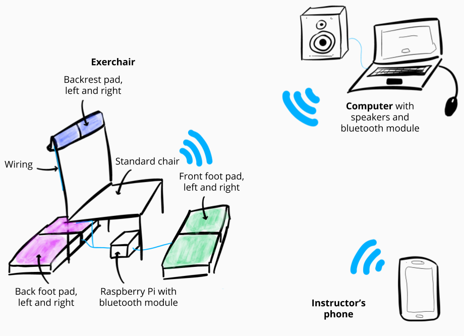

The objectives
- Understand the barriers to physical exercise for senior citizens
- Specify what kinds of physical activities are possible and enjoyable for senior citizens
- Create a social and playful concept that encourages senior citizens to exercise

Which methods did I use?
Here are the main methods that I used for this design project.
1. Literature review
The aim of this brief literature review was to find answers to the following questions:
- What objects to promote physical activity (PA) amongst senior citizens have already been created and what are their characteristics?
- Which senior citizens are least likely to participate in PA?
- What affordances and characteristics should an object aimed to promote PA towards senior citizens in nursing homes have?
- What are the psychological factors hindering and encouraging senior citizens to partake in PA? (eg: fears of injury, internalized stereotypes…)
I selected twelves articles have been selected according to their relevance to answer some of these questions. It started with the study of the characteristics of the population. Then I studied design guidelines created by researchers in the domain of exergames for senior citizens. Finally, I took a look at a few examples of games created in a user-centered approach in academia.
"This literature review about older persons and their motivations for doing physical activity revealed that most of the solutions created technologically are exergames using video game consoles. Researchers working on this theme noted that most solutions that are commercially available are not suited for the physical and cultural specificities of the older person, although they do increase enjoyment compared to traditional exercise, which could contribute to long term adhesion.
However, one dimension that often seems to be missing from these exercizing games for senior citizens is the social component. [...] This is why the focus of this design research shifted from pure motivation to exercise to be about maximising engagement and social interaction through a physical object for exercise."
2. Onsite user research
To increase my empathy as a designer by being in contact with the end-users, I conducted an observation of PA activities in a senior community center and engaged in small informal conversations with the staff and senior participants.
The aim was to see:
- How the activities were structured
- What exercises worked and which didn’t
- Which technology was used
- Who participated and who didn't
- Elements that would allow me to establish hypotheses about the visceral, behavioral and reflective design elements to leverage for emotional design as defined by Don Norman.
"After witnessing the senior exercising class, I saw the importance of incorporating the chair into the whole experience. In nursing homes, many residents are permanently in wheelchairs. In community centers, although none of the participants were in one, several of them still relied on the chair for support to stand up and do the motions, for example leg swings. I wanted to use the chair as an interface directly, and also allow for each player to go to their own rhythm and speed in an individual experience: the feelings of comparison or competition were to be avoided, as during the senior exercising session at the Nelson center, there were great differences in the speed, tonicity and intensity the moves were performed. "
3. Brainstorming and design sketching for ideation
To come up with ideas, I brainstormed as many concepts as possible in solo crazy-8 sketching exercises by mobilizing the academic and onsite user-generated knowledge using the following constraints:
- No big screen that monopolises most of the attention
- Groups of 4 - 10 persons
- Moderated by an exercise coach / assistant
- Compatible with chair exercises
- Cheap and easy to install
- Supporting social interaction and fun
- Respect design guidelines for seniors
Here is the final idea that stuck.
The Exerchair Symphony: hardware
How does it work?
A group of 10 senior citizens gathered in a circle are each equipped with an exerchair. A fitness instructor demonstrates the movements to perform, and each person tries to do it with their own chair.
On each chair, a device composed of LED lights and sensors encourages users to interact with it by putting pressure with the hand or foot on the parts that light up.
To bring the participants together and to bring fun, players are connected through music and satisfying sounds. Each participant is responsible for one sub-track of a symphony: when they perform the exercises demonstrated by the instructor by interacting with their chair, their subtrack is added to the sound system, providing them with direct feedback on their participation. The group objective is to have a symphony as complete as possible.
4. Hardware specifications
For a clear prototyping direction, it is important to define specifications, as well as risks. It allows for functionality-driven development, and it is a way to check if the prototype meets the standards asked of the device.
As such, I defined functional and technical specifications, and identified some risks to watch out for.